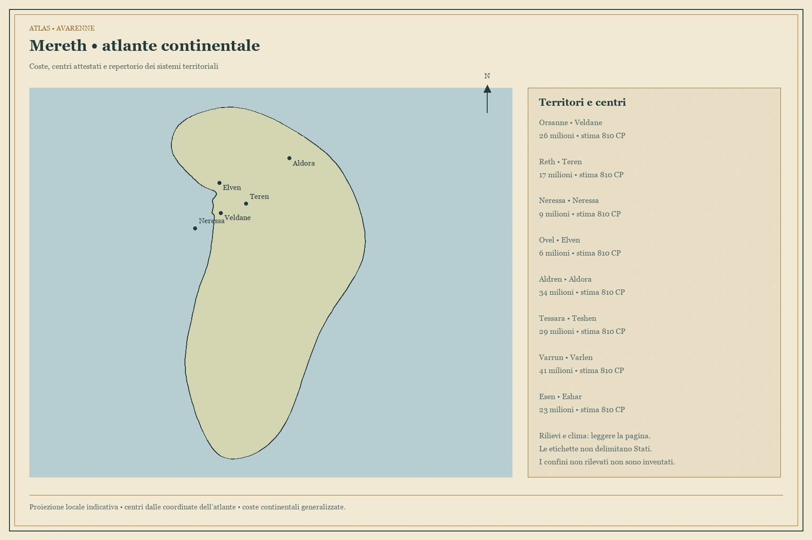
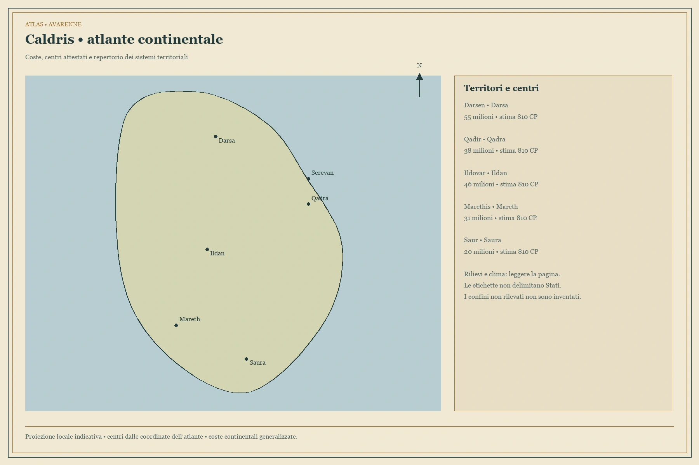
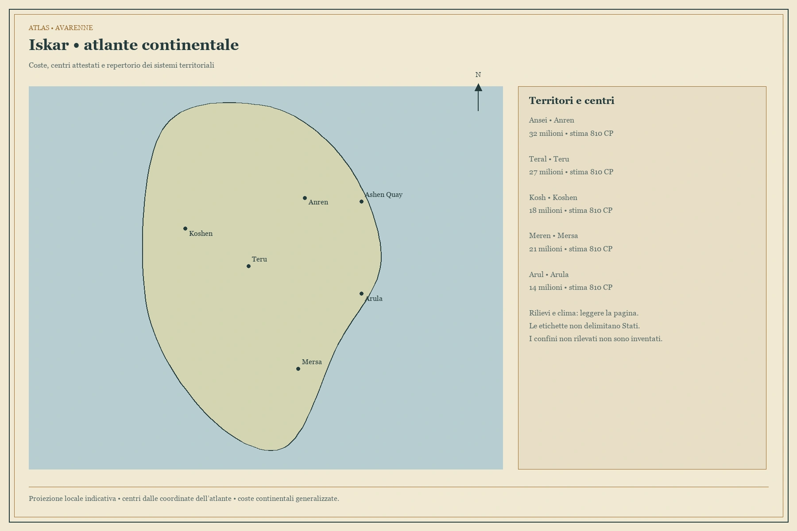
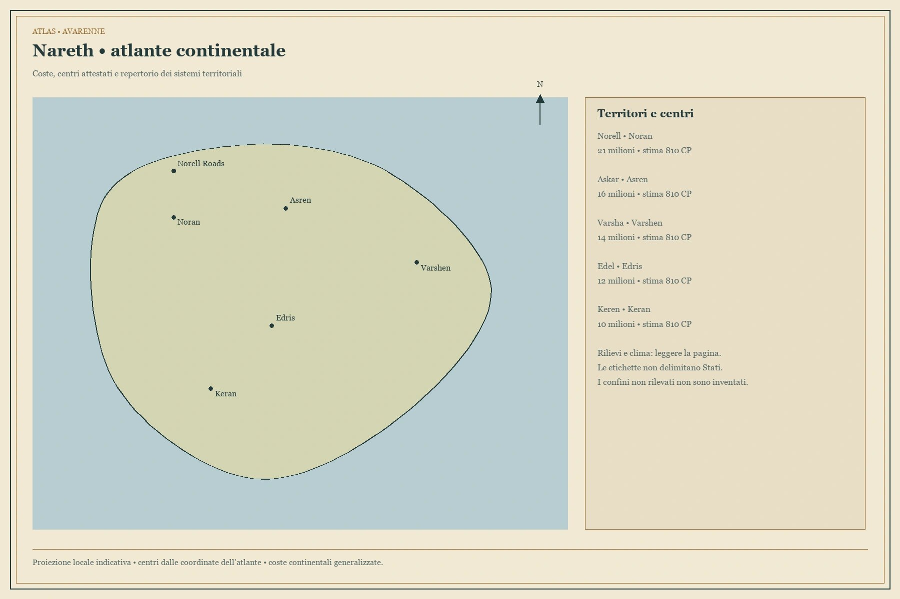
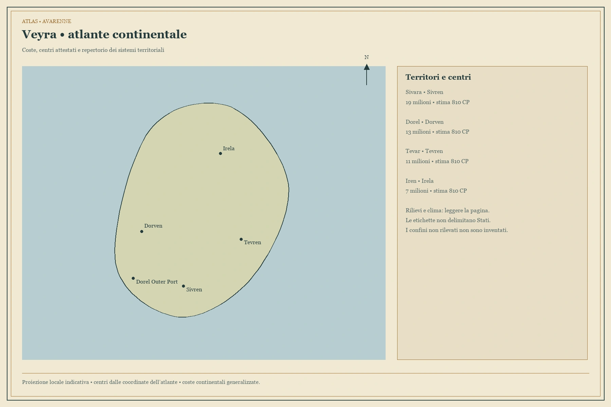
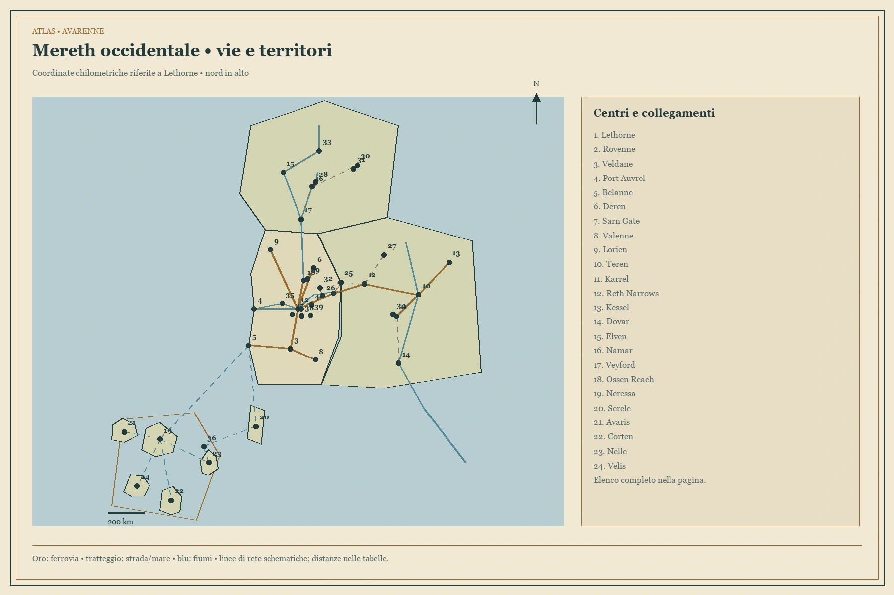
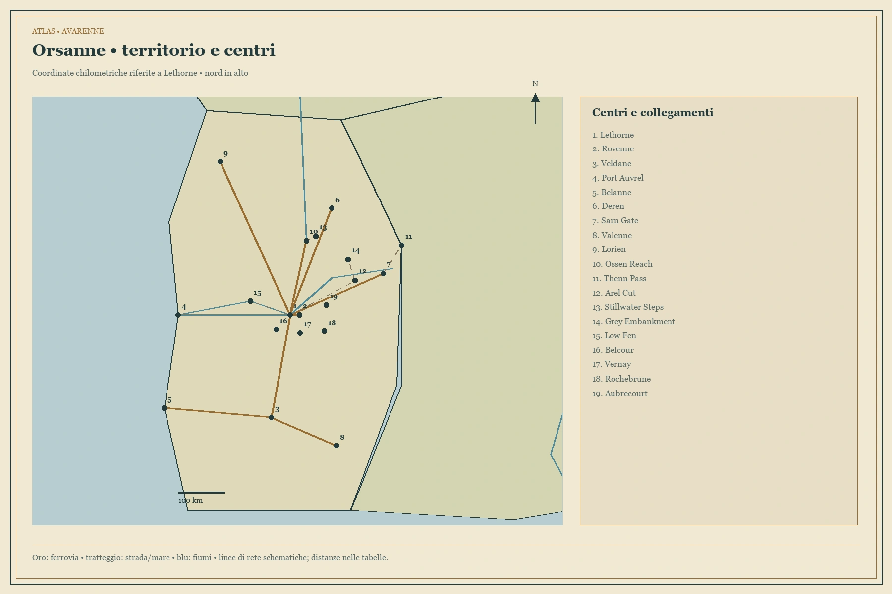
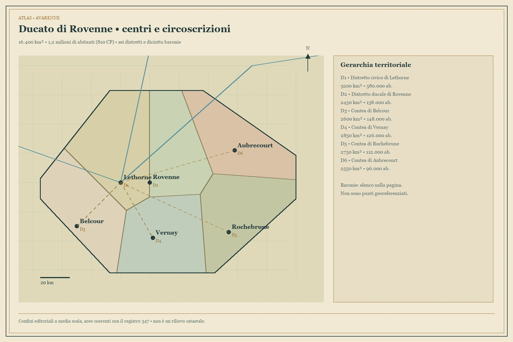
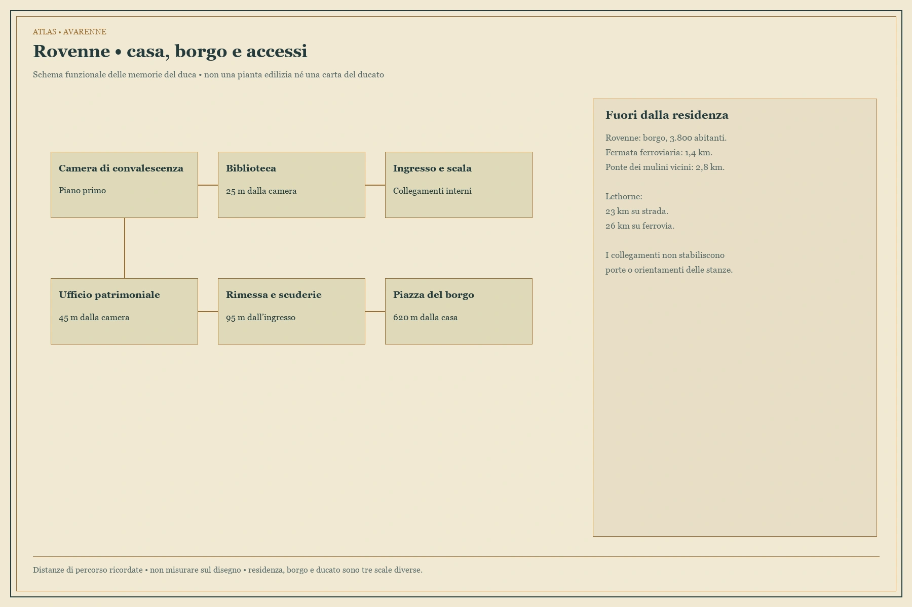

Scegli la scala che ti serve: il mondo per collocare i continenti, la regione per capire i collegamenti, il ducato per orientarti fra città e circoscrizioni. Ogni carta ha una spiegazione, fonti, limiti di precisione e un’immagine ingrandibile. Le vecchie tre carte tecniche restano conservate e rinviano alle versioni spiegate.
Il mondo e gli oceani
I cinque continenti

Mereth — atlante continentale
Caldris — atlante continentale
Iskar — atlante continentale
Nareth — atlante continentale
Veyra — atlante continentaleRegione iniziale e ducato

Mereth occidentale — reti e territori
Orsanne — carta del regno
Ducato di Rovenne — atlante territoriale
Rovenne — residenza e accessiStoria e territorio
Che cosa una carta può dirti
Una veduta mostra l’aspetto di un luogo. Una carta geografica ne colloca gli elementi. Una carta politica distingue giurisdizioni. Uno schema di rete spiega relazioni e collegamenti. Una pianta descrive un edificio. Queste funzioni non sono intercambiabili; qui ogni voce dichiara quale rappresentazione offre.
Quartieri e luoghi delle città centrali
Undici città: settori, servizi, accessi e situazioni. Le descrizioni sono funzionali; coordinate, itinerari e confini restano quelli delle carte vigenti.